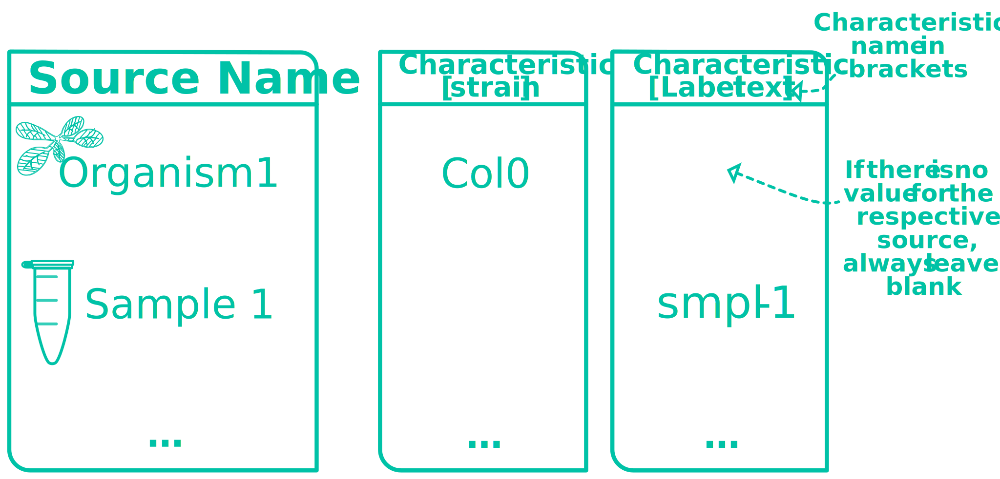

The Source Name column defines the source of biological material used for your experiments. The name used must be a unique identifier. It can be an organism, a sample, or both.
Every annotation table must start with the Source Name column
Characteristics
Use characteristics columns to annotate interesting properties of the source material.
You can use any number of characteristics columns.

Factor
Use factor columns to track the experimental conditions that govern your study
Most of the time, factors are the most important building blocks for downstream computational analysis.

Parameter
Use parameters to annotate your experimental workflow.
You can group parameters to create a protocol.
Sample name
The Sample Name column defines the resulting biological material of the annotated workflow. The name used must be a unique identifier.
Samples can again be sources for further experimental workflows.

Data
The Data column describes data files that results from your experiments. Additionally to the type of data, the annotated files must have a unique name.
Data files can be sources for computational workflows.